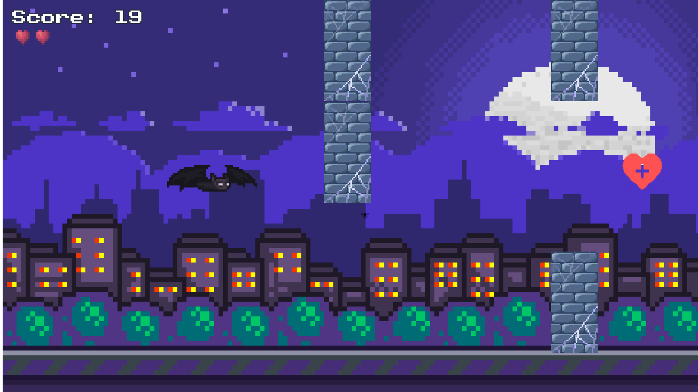
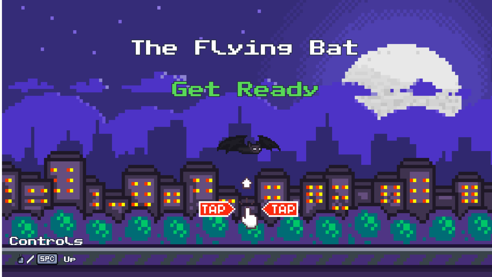
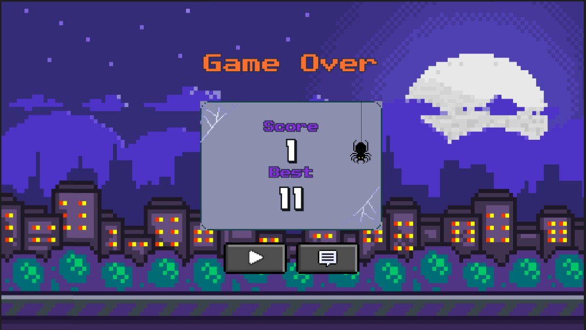

<!DOCTYPE html>
<html lang="en"></html>
<head>
    <link rel="shortcut icon" href="icons/favicon.ico" type="image/x-icon">
    <meta charset="UTF-8">
    <meta name="viewport" content="width=device-width, initial-scale=1.0">
    <title>Flying Bat - Sander Houdijk</title>
    <script src="https://unpkg.com/@tailwindcss/browser@4"></script>
    <style>
        .slideshow-container {
            position: relative;
            max-width: 100%;
            margin: auto;
            margin-left: 20px;
        }
        .mySlides {
            display: none;
        }
        .mySlides img {
            width: 1024px;
            height: 576px;
            object-fit: cover;
        }
        .prev, .next {
            cursor: pointer;
            position: absolute;
            top: 50%;
            width: auto;
            padding: 16px;
            margin-top: -22px;
            color: white;
            font-weight: bold;
            font-size: 18px;
            transition: 0.6s ease;
            border-radius: 0 3px 3px 0;
            user-select: none;
        }
        .next {
            right: 0;
            border-radius: 3px 0 0 3px;
        }
        .prev:hover, .next:hover {
            background-color: rgba(0,0,0,0.8);
        }
        .text {
            color: #000;
            font-size: 15px;
            padding: 8px 12px;
            position: absolute;
            bottom: 8px;
            width: 100%;
            text-align: center;
        }
        .numbertext {
            color: #f2f2f2;
            font-size: 12px;
            padding: 8px 12px;
            position: absolute;
            top: 0;
        }
    </style>
</head>
<body class="bg-gray-800">
    <nav class="bg-gray-900 p-4">
        <div class="container mx-auto flex justify-between items-center">
            <a href="../index.html" class="text-blue-500 hover:text-blue-700 text-2xl font-bold">Sander Houdijk</a>
            <ul class="flex space-x-4">
                <li><a href="../index.html" class="text-gray-300 hover:text-white">Home</a></li>
                <li><a href="../about.html" class="text-gray-300 hover:text-white">Over Mij</a></li>
                <li><a href="../projects.html" class="text-gray-300 hover:text-white">Projecten</a></li>
                <li><a href="../contact.html" class="text-gray-300 hover:text-white">Contact</a></li>
            </ul>
        </div>
    </nav>

    <div class="flex justify-center">
        <div class="slideshow-container">
            <div class="mySlides fade">
                <div class="numbertext">1 / 3</div>
                
                <div class="text">Gameplay</div>
            </div>

            <div class="mySlides fade">
                <div class="numbertext">2 / 3</div>
                
                <div class="text">Start Screen</div>
            </div>

            <div class="mySlides fade">
                <div class="numbertext">3 / 3</div>
                
                <div class="text">Flying Bat</div>
            </div>

            <a class="prev" onclick="plusSlides(-1)">&#10094;</a>
            <a class="next" onclick="plusSlides(1)">&#10095;</a>
        </div>
        <br>

        <div class="showcase-content bg-gray-800 p-4 w-1/2 overflow-y-auto">
            <div id="flyingbat" class="container mx-auto px-4 py-16">
            <h1 class="text-4xl font-bold text-white mb-4">Flying Bat</h1>
            <p class="text-gray-300 mb-4">Flying Bat is een remake van het populaire spel Flappy Bird. In dit spel bestuur je een vleermuis die door een reeks obstakels moet navigeren. Het spel is gebouwd met JavaScript en biedt een leuke en uitdagende ervaring.</p>
            
            <h2 class="text-2xl font-semibold text-white mb-2">Functies</h2>
            <ul class="list-disc list-inside text-gray-300 mb-4">
                <li>Eenvoudige en verslavende gameplay</li>
                <li>Highscore bijhouden</li>
                <li>Responsief ontwerp</li>
                <li>Aanpasbare vleermuis en obstakels</li>
            </ul>
            
            <h2 class="text-2xl font-semibold text-white mb-2">Gebruikte technologieën</h2>
            <ul class="list-disc list-inside text-gray-300 mb-4">
                <li>JavaScript</li>
                <li>HTML & CSS</li>
            </ul>
            
            <h2 class="text-2xl font-semibold text-white mb-2">GitHub Repository</h2>
            <p class="text-gray-300 mb-4">Je kunt de broncode van Flying Bat vinden op GitHub: <a href="https://github.com/sanderhd/flyingbat" class="text-blue-500 hover:text-blue-700">https://github.com/sanderhd/flyingbat</a></p>
            </div>
        </div>
    </div>

    <footer class="container mx-auto p-8 text-center text-gray-300 bg-gray-900">
        <p>&copy; <span id="footer_year">Laden...</span> Sander Houdijk. Alle rechten voorbehouden.</p>
    </footer>

    <script src="../JS/footer.js"></script>
    <script src="../JS/slideshow.js"></script>
</body>
</html>